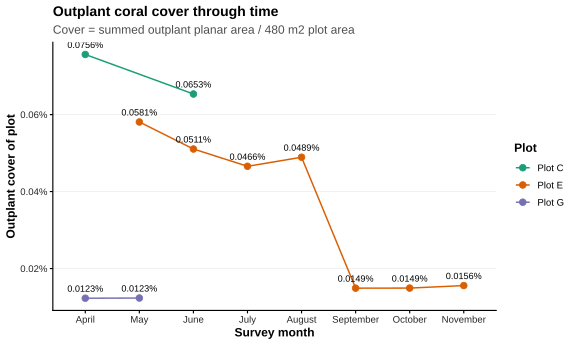
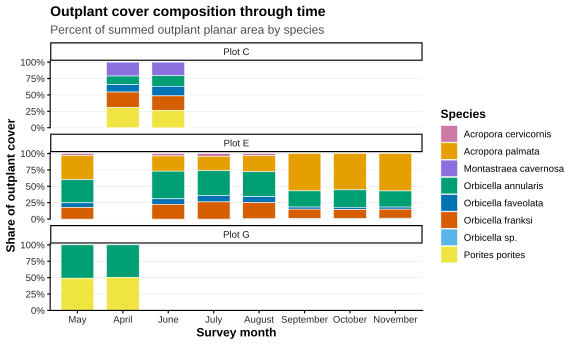
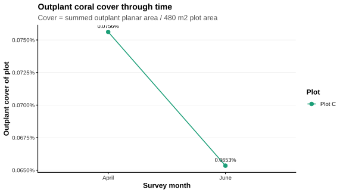
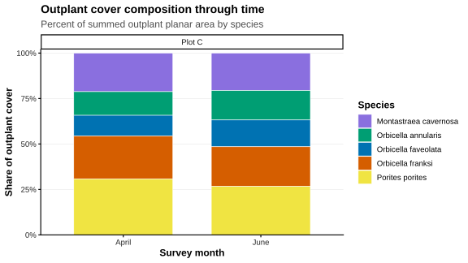

| Plot | Section | Start month | End month | Match type | File | File exists |
|---|---|---|---|---|---|---|
| Plot C | 0-0 | November | April | 0-0 | Plot_C_Coki_PlotC_Survivorship_20251103_0-0-Coki_PlotC_Survivorship_20260403_0-0.csv | TRUE |
| Plot C | 0-0 | April | June | 0-0 | Plot_C_Coki_PlotC_Survivorship_20260403_0-0-Coki_PlotC_Survivorship_20260606_0-0.csv | TRUE |
| Plot C | 1-0 | November | April | 1-0 | Plot_C_Coki_PlotC_Survivorship_20251103_1-0-Coki_PlotC_Survivorship_20260403_1-0.csv | TRUE |
| Plot C | 1-0 | April | June | 1-0 | Plot_C_Coki_PlotC_Survivorship_20260403_1-0-Coki_PlotC_Survivorship_20260606_1-0.csv | TRUE |
| Plot E | 1-0 | May | June | 1-0 | PlotC_1-0_Coki_PlotE_20250507_1-0-Coki_PlotE_20250609_1-0.csv | TRUE |
| Plot E | 1-0 | June | July | 1-0 | PlotC_1-0_Coki_PlotE_20250609_1-0-Coki_PlotE_20250711_1-0.csv | TRUE |
| Plot E | 1-0 | July | August | 1-0 | PlotC_1-0_Coki_PlotE_20250711_1-0-Coki_PlotE_20250804_1-0.csv | TRUE |
| Plot E | 1-1 | May | June | 1-1 | plotE1-1Matches_Coki_PlotE_20250507_1-1-Coki_PlotE_20250609_1-1.csv | TRUE |
| Plot E | 1-1 | June | July | 1-1 | plotE1-1Matches_Coki_PlotE_20250609_1-1-Coki_PlotE_20250711_1-1.csv | TRUE |
| Plot E | 1-1 | July | August | 1-1 | plotE1-1Matches_Coki_PlotE_20250711_1-1-Coki_PlotE_20250804_1-1.csv | TRUE |
| Plot E | 1-1 | August | September | 1-1 | plotE1-1Matches_Coki_PlotE_20250804_1-1-Coki_PlotE_20250908_1-1.csv | TRUE |
| Plot E | 1-1 | September | October | 1-1 | plotE1-1Matches_Coki_PlotE_20250908_1-1-Coki_PlotE_20251014_1-1.csv | TRUE |
| Plot E | 1-1 | October | November | 1-1 | plotE1-1Matches_Coki_PlotE_20251014_1-1-Coki_PlotE_20251106_1-1.csv | TRUE |
| Plot G | 0-0 | November | April | 0-0 | 0-0_PlotG_Matches_November_April.csv | TRUE |
| Plot G | 0-0 | April | May | 0-0 | 0-0_PlotG_matches_April_May.csv | TRUE |
| Plot G | 0-1 | November | April | 0-1 | 0-1_PlotG_Matches_November_April.csv | TRUE |
| Plot G | 0-1 | April | May | 0-1 | 0-1_PlotG_Matches_April_May.csv | TRUE |
| Plot G | 1-0 | November | April | 1-0 | Coki_PlotG_Survivorship_Coki_PlotG_20251107_1-0-Coki_PlotG_20260424_1-0.csv | TRUE |
| Plot G | 1-0 | April | May | 1-0 | Coki_PlotG_Survivorship_Coki_PlotG_20260424_1-0-Coki_PlotG_20260526_1-0.csv | TRUE |
DPNR Outplant Analyses
Select the Plot that you would like to view
This report analyzes DPNR coral outplant monitoring data from TagLab match files. The workflow is designed for repeated use: add new plot/month files to the config, render the report, review the QA/QC checks, and the tables and figures rebuild automatically.
The active outplant workflow now combines TagLab subsections into one plot-level result for each plot letter. Section-level information is still used for file intake and QA/QC, but survivorship, cover, species prevalence, and species cover composition are summarized as Plot C, Plot E, Plot G, and so on.
Start with these tabs
- Use Analysis Report for the presentation-ready summary figures and tables.
- Use the individual Plot C, Plot E, and Plot G tabs when checking plot-specific files, QA/QC, and downloads.
- Use SOP when adding new TagLab exports or preparing a GitHub update.
The two recommended datasets to open first are:
data_processed/outplant_master_tracking_dataset.csv: one row per trackedGenetper month, including presence, area, cover contribution, and baseline-survival status.outputs/Tables/outplant_master_summary_dataset.csv: one long-format summary table containing cumulative survivorship, interval survivorship, coral cover, species prevalence, and species cover-share metrics.
Each plot tab is organized with the same outline so new data can be added without redesigning the report: overview, data status, depth metadata, QA/QC, cumulative survivorship, interval survivorship, coral cover, species prevalence, species cover composition, and downloads.
Where everything goes
This workflow uses Teams and GitHub for different jobs:
- Teams is where we drop off and store the original TagLab exports. New files go there first, and the Teams copy of
Coral_survivorship_projectcan be used to record the filenames in the plot config CSVs. - GitHub is where the working analysis lives. The code, active config files, approved data, website, and project history are in
CWORI/DPNR_Survivorship. - The Teams project copy is there to help pass files and config information along. We won’t render or publish from that copy because it may be a little behind GitHub.
- Keep the active local Git project outside the Teams/OneDrive-synced folders. This keeps cloud syncing and Git from tripping over each other.
- Before moving anything to GitHub, make sure it’s okay for the repository and doesn’t contain anything sensitive.
Who does what
- Anyone working on TagLab: export the data, put it in the right Teams folder, add the file information to the matching Teams config CSV, and let the Coder know it’s ready.
- Coder: move the ready files and rows into the local Git project, render and check everything, and push the update to GitHub.
Step 1: Export matches from TagLab
- Complete annotations and Genet Matching for the relevant plot section and survey months. Make Sure to Add Tag ID from Matches Time Point 1.
- Export all months for that plot section through the same TagLab batch/matching process. This is necessary so numeric
GenetIDs remain consistent between adjacent month files. - Export one matches CSV for each adjacent month pair, such as May-June and June-July.
- Confirm the matches export contains the expected fields:
Genet,Blob1,Blob2,Area1,Area2,Class,Action, Tag ID, andSplit/Fuse. - Do not rename columns or manually change area values after export.
- Make Sure the File Name keeps the two dates. A current example is
1-1_PlotE_Matches_20250507_20250609.csv.
Area1 represents the start survey and Area2 represents the end survey. Match files are the required inputs for the active outplant-survivorship workflow.
Step 2: Export and archive Genet Data
Genet Data is optional reference metadata; it is not required for the current outplant match workflow.
- Export Genet Data when a complete plot-section batch gains new months or when Genet IDs, classes, tags, or other annotations have been corrected.
- Use a descriptive name such as
Plot_E_1-0_GenetData_May-August2025.csv. - Archive it in the Teams
Genet Datafolder under the appropriate plot and section. - Do not add it to the matches config or substitute it for a matches export.
Step 3: Upload exports to Teams
The Teams intake location is:
DPNR > Documents > General > Photogrammetry & Monitoring > Survivorship Exports
Use the two top-level folders shown there:
Matches: required month-to-month TagLab matches CSVs.Genet Data: optional reference/archive exports.
Within each, keep files separated by plot and plot section. Recommended examples are:
Survivorship Exports/Matches/Plot_E/1-0/Survivorship Exports/Matches/Plot_E/1-1/Survivorship Exports/Genet Data/Plot_E/1-0/
If you are updating the matches files because you have annotated a new month, remove all of the old one and replace with all new files so that the Genet ID’s remain constant.
Before saying the files are ready, check that:
- The file is in the correct
MatchesorGenet Datafolder. - The plot and plot section in the filename/folder are correct.
- Both survey dates are visible in the filename or included in the Teams message.
- The file is a CSV and opens with the expected columns.
- Previous Files of the same Matches are deleted, DO NOT keep the same file matches if you make a new batch of matches!
- The same interval has not already been uploaded.
- Existing exports have not been overwritten or deleted.
Step 4: Add the file information to the Teams project copy
Use the Teams copy of Coral_survivorship_project to record which match files are ready. Only edit the matching plot config under:
config/outplant_interval_files/
For example, Plot E files belong in Plot_E.csv. Add one row for every month-to-month matches file and keep rows grouped by plot_section and ordered by month_start_date.
Before anyone starts adding rows, The Coder should make sure the Teams copy has the current Plot_A.csv through Plot_H.csv structure from GitHub. If the config templates change, we’ll first copy over any rows that are still waiting, then refresh the Teams templates. That way nobody’s work gets overwritten.
Each row needs:
plot: display name, such asPlot E.plot_section: TagLab subsection, such as1-0or1-1.plot_folder: local raw-data folder, such asPlot_E.file: exact filename, including capitalization and.csv.month_startandmonth_end: readable survey-month labels.month_start_dateandmonth_end_date: dates inYYYY-MM-DDformat.file_type: normallycsv.match_type: normally the same value asplot_section.plot_length_mandplot_width_m: plot dimensions in meters.taglab_area_units: units used by the TagLab area export, currentlycm2.
Please leave the header and column names alone, keep Genet Data filenames out of this config, and don’t remove existing rows. Editing the Teams config does not update the live analysis by itself.
Step 5: Let Coder know the files are ready
Send Coder a short Teams message with:
- plot and plot section;
- start and end survey months/dates;
- exact matches filename(s);
- whether a new Genet Data export was included;
- any known annotation, split/fuse, or export concerns.
Once that message is sent, Coder can move everything into the GitHub project and check it.
Step 6: Move the ready files into the local Git project
Coder completes these steps on the computer with the local Git project:
Open
Coral_survivorship_projectin RStudio.Pull the latest GitHub version before copying or editing anything:
git pullCopy each approved matches CSV from Teams into:
data_raw/taglab/Plot_<letter>/Open the appropriate local config file under
config/outplant_interval_files/.Copy the new rows from the Teams config into the local config. Copy the rows rather than replacing the whole local config file.
Confirm that each config filename exactly matches the file placed in
data_raw/taglab/.Update
data_raw/metadata/Coordinates_Depths.csvonly when reviewed plot-marker metadata have changed.
Step 7: Render and validate the Quarto analysis
- Open
coral_survivorship_report.qmdin RStudio. - Click Render. Rendering rebuilds the processed datasets, tables, figures, and
docs/website. - Review the File Audit first. Every configured row must show
file_exists = TRUE. - Review interval QA for missing
Genet, missing species, negative areas, and unexpected action or split/fuse labels. - Review shared-month continuity. Adjacent intervals should normally show:
- zero missing Genets;
- zero unexpected new Genets;
- zero species mismatches.
- Confirm the plot section and month order are correct in tables and figures.
- Compare major results with the previous website version and investigate unexplained jumps before publishing.
If a configured file is missing or the identity/continuity checks look strange, pause and check it before pushing.
Step 8: Commit and push the reviewed update to GitHub
Using the RStudio Git pane:
- Review all changed files.
- Stage the new raw matches files, changed plot config, updated outputs, and rendered
docs/files. - Commit with a clear message, for example
Add Plot E 1-0 August-September interval. - Push the commit to GitHub.
Equivalent R-Studio Terminal commands if that is easier for you are:
git status
Rscript scripts/pre_push_check.R
git add .
git commit -m "Describe the plot and interval added"
git pushThe GitHub repository is https://github.com/CWORI/DPNR_Survivorship.
Please make sure this is the repository you are adding too!
Step 9: Confirm the live website
- Wait briefly for GitHub Pages to publish the updated
main/docscontent. - Open
https://cwori.github.io/DPNR_Survivorship/. - Confirm the new plot/section/month appears and that figures and tables load.
- If the website did not update, first confirm that the rendered
docs/changes were committed and pushed.
Final update checklist
Workflow
This report reads the outplant-only TagLab match files listed in the plot-specific CSVs under config/outplant_interval_files/, standardizes them into common start/end area columns, collapses repeated blob rows to one tracked Genet per interval, and produces plot-level survivorship, cover, and species-composition outputs. TagLab subsections remain available for QA/QC, but the main analysis combines them into one result per plot letter.
The workflow is designed so future users can add new plots or month pairs by editing the config rather than changing analysis code.
The two recommended outplant datasets to open first are:
data_processed/outplant_master_tracking_dataset.csv: one row per trackedGenetper month, including presence, area, cover contribution, and baseline-survival status.outputs/Tables/outplant_master_summary_dataset.csv: one long-format summary table containing cumulative survivorship, interval survivorship, coral cover, species prevalence, and species cover-share metrics.
The workflow still writes detailed intermediate CSVs for QA/QC and reproducibility, but most users should only need the two files above unless they are debugging the analysis.
Survivorship is treated as apparent persistence through a TagLab interval: an outplant is counted as surviving when it has measurable area at the start and end of the interval.
Outplant-Only Plot E Workflow
This is the main test workflow for the outplant-only TagLab match files. It treats Area1 as the start-month area and Area2 as the end-month area, and calculates cover using the configured 16 by 30 m plot area. The same-batch TagLab exports use Genet as the across-month tracking ID. If a Genet has multiple blob rows in one interval, those rows are collapsed into one tracked outplant before survivorship is calculated. The area unit is read from the appropriate plot CSV under config/outplant_interval_files/; the current test assumes TagLab areas are in square centimeters.
This chunk verifies that every outplant interval file listed in the config exists. This is the first place to check when adding new files for other plots or months.
This chunk checks whether the TagLab files have missing Genet IDs, missing species, negative areas, or unusual action/split-fuse labels. These checks catch export problems before the biological summaries are interpreted.
| Section | Start month | End month | Rows | Missing Genet | Missing species | Negative start area | Negative end area | Actions | Split/fuse events |
|---|---|---|---|---|---|---|---|---|---|
| 0-0 | November | April | 344 | 0 | 0 | 0 | 0 | born | none |
| 0-0 | April | June | 342 | 0 | 0 | 0 | 0 | dead; grow; n/s; same; shrink | fuse; n/s; none |
| 1-0 | November | April | 253 | 0 | 0 | 0 | 0 | born | none |
| 1-0 | April | June | 238 | 0 | 0 | 0 | 0 | born; dead; grow; same; shrink | n/s; none |
| 1-0 | May | June | 272 | 0 | 0 | 0 | 0 | born; dead; grow; n/s; same; shrink | fuse; n/s; none; split |
| 1-0 | June | July | 218 | 0 | 0 | 0 | 0 | born; dead; grow; n/s; same; shrink | fuse; n/s; none |
| 1-0 | July | August | 177 | 0 | 0 | 0 | 0 | dead; grow; n/s; same; shrink | fuse; n/s; none |
| 1-1 | May | June | 76 | 0 | 0 | 0 | 0 | dead; grow; same; shrink | n/s; none |
| 1-1 | June | July | 70 | 0 | 0 | 0 | 0 | dead; grow; n/s; same; shrink | fuse; n/s; none |
| 1-1 | July | August | 65 | 0 | 0 | 0 | 0 | born; dead; grow; n/s; same; shrink | fuse; n/s; none |
| 1-1 | August | September | 62 | 0 | 0 | 0 | 0 | grow; n/s; same; shrink | fuse; n/s |
| 1-1 | September | October | 59 | 0 | 0 | 0 | 0 | dead; grow; n/s; same; shrink | fuse; n/s; none |
| 1-1 | October | November | 57 | 0 | 0 | 0 | 0 | born; grow; n/s; same; shrink | fuse; n/s; none |
| 0-0 | November | April | 21 | 0 | 0 | 0 | 0 | born | none |
| 0-0 | April | May | 21 | 0 | 0 | 0 | 0 | grow; same; shrink | n/s |
| 0-1 | November | April | 3 | 0 | 0 | 0 | 0 | born | none |
| 0-1 | April | May | 3 | 0 | 0 | 0 | 0 | grow; same; shrink | n/s |
| 1-0 | November | April | 21 | 0 | 0 | 0 | 0 | born | none |
| 1-0 | April | May | 21 | 0 | 0 | 0 | 0 | grow; same; shrink | n/s |
This chunk checks whether the same Genet number maps to different species, tags, or genotypes across files. If the table says no conflicts were detected, the same-batch export is behaving much better for individual-level survivorship.
| Status |
|---|
| No cross-file Genet identity conflicts detected. |
This chunk checks whether the same shared month matches between adjacent files after repeated Genet blob rows have been collapsed. A good export should have zero missing/new Genets and zero species mismatches for each shared month. Area mismatches can occur when TagLab split/fuse behavior changes how multiple blobs are grouped under the same Genet.
| Section | Shared month | Previous file end n | Next file start n | In both | Missing from next start | New in next start | Species mismatches | Area mismatches | Max area difference |
|---|---|---|---|---|---|---|---|---|---|
| 0-0 | April | 301 | 298 | 295 | 6 | 3 | 0 | 1 | 10.325 |
| 1-0 | April | 253 | 237 | 237 | 16 | 0 | 0 | 0 | 0.000 |
| 1-0 | June | 184 | 174 | 174 | 10 | 0 | 0 | 0 | 0.000 |
| 1-0 | July | 164 | 170 | 164 | 0 | 6 | 0 | 0 | 0.000 |
| 1-1 | June | 55 | 55 | 55 | 0 | 0 | 0 | 0 | 0.000 |
| 1-1 | July | 54 | 54 | 54 | 0 | 0 | 0 | 0 | 0.000 |
| 1-1 | August | 55 | 55 | 55 | 0 | 0 | 0 | 0 | 0.000 |
| 1-1 | September | 55 | 55 | 55 | 0 | 0 | 0 | 0 | 0.000 |
| 1-1 | October | 54 | 54 | 54 | 0 | 0 | 0 | 0 | 0.000 |
| 0-0 | April | 21 | 21 | 21 | 0 | 0 | 0 | 0 | 0.000 |
| 0-1 | April | 3 | 3 | 3 | 0 | 0 | 0 | 0 | 0.000 |
| 1-0 | April | 21 | 21 | 21 | 0 | 0 | 0 | 0 | 0.000 |
This chunk summarizes cumulative outplant survivorship from the baseline month. Each plot uses the first month with present outplants as the baseline for each monitored subsection, then combines subsections only for months where every configured subsection for that plot is represented. Months with partial subsection coverage are kept in the section-level QA outputs, but are excluded from the full-plot cumulative curve so the denominator does not change through time.
| Plot | Month | Baseline month | Baseline n | Deaths this interval | Cumulative deaths | Surviving from baseline | Cumulative survival (%) | 95% CI low | 95% CI high |
|---|---|---|---|---|---|---|---|---|---|
| Plot C | April | April | 554 | 0 | 0 | 554 | 100.0 | 99.3 | 100.0 |
| Plot C | June | April | 554 | 28 | 28 | 526 | 94.9 | 92.8 | 96.6 |
| Plot E | May | May | 271 | 0 | 0 | 271 | 100.0 | 98.6 | 100.0 |
| Plot E | June | May | 271 | 35 | 35 | 236 | 87.1 | 82.5 | 90.8 |
| Plot E | July | May | 271 | 19 | 54 | 217 | 80.1 | 74.8 | 84.7 |
| Plot E | August | May | 271 | 4 | 58 | 213 | 78.6 | 73.2 | 83.3 |
| Plot G | April | April | 45 | 0 | 0 | 45 | 100.0 | 92.1 | 100.0 |
| Plot G | May | April | 45 | 0 | 0 | 45 | 100.0 | 92.1 | 100.0 |
This chunk summarizes the Deep Nursery temperature logger data used in the cumulative survivorship figure. The logger is slightly deeper than the outplant site but close enough for this practice overlay.
| Logger | Start date | End date | Days | Mean temp (°C) | Min temp (°C) | Max temp (°C) |
|---|---|---|---|---|---|---|
| Deep Nursery | 2025-05-07 | 2025-11-20 | 198 | 29.09 | 23.46 | 32.34 |
Plot E has enough monthly observations to work well as a date-based time series. Plot C and Plot G are early monitoring series, so they are shown separately with baseline/follow-up positions instead of being stretched across the full calendar axis.
Plot E Cumulative Survivorship

Plot C and Plot G Cumulative Survivorship

This chunk reports interval survivorship between adjacent survey months. It is useful as a diagnostic because a later interval can be 100% even if cumulative survivorship has already declined. Intervals that start before outplanting can have n_start = 0; those rows remain in the table but are omitted from interval survival figures because survival cannot be estimated from zero starting corals.
| Plot | Interval | Start n | Survived n | Died n | Born n | Interval survival (%) | 95% CI low | 95% CI high |
|---|---|---|---|---|---|---|---|---|
| Plot C | November to April | 0 | 0 | 0 | 554 | NaN | NA | NA |
| Plot C | April to June | 535 | 529 | 6 | 1 | 98.9 | 97.6 | 99.6 |
| Plot E | May to June | 271 | 236 | 35 | 3 | 87.1 | 82.5 | 90.8 |
| Plot E | June to July | 229 | 217 | 12 | 1 | 94.8 | 91.0 | 97.3 |
| Plot E | July to August | 224 | 220 | 4 | 2 | 98.2 | 95.5 | 99.5 |
| Plot E | August to September | 55 | 55 | 0 | 0 | 100.0 | 93.5 | 100.0 |
| Plot E | September to October | 55 | 54 | 1 | 0 | 98.2 | 90.3 | 100.0 |
| Plot E | October to November | 54 | 54 | 0 | 2 | 100.0 | 93.4 | 100.0 |
| Plot G | November to April | 0 | 0 | 0 | 45 | NaN | NA | NA |
| Plot G | April to May | 45 | 45 | 0 | 0 | 100.0 | 92.1 | 100.0 |
Plot E interval survivorship is shown as a time series. Plot C and Plot G are shown with compact bars for their current post-baseline intervals.
Plot E Interval Survivorship

Plot C and Plot G Interval Survivorship

This chunk reports outplant coral cover by month. Cover is calculated as summed outplant area divided by the 480 m2 plot area.
| Plot | Month | Outplants present | Total outplant area (m2) | Plot area (m2) | Outplant cover (%) |
|---|---|---|---|---|---|
| Plot C | April | 554 | 0.362963 | 480 | 0.07562 |
| Plot C | June | 530 | 0.313673 | 480 | 0.06535 |
| Plot E | May | 271 | 0.278781 | 480 | 0.05808 |
| Plot E | June | 239 | 0.245070 | 480 | 0.05106 |
| Plot E | July | 218 | 0.223529 | 480 | 0.04657 |
| Plot E | August | 222 | 0.234827 | 480 | 0.04892 |
| Plot E | September | 55 | 0.071549 | 480 | 0.01491 |
| Plot E | October | 54 | 0.071657 | 480 | 0.01493 |
| Plot E | November | 56 | 0.074796 | 480 | 0.01558 |
| Plot G | April | 45 | 0.059005 | 480 | 0.01229 |
| Plot G | May | 45 | 0.059253 | 480 | 0.01234 |
This chunk plots outplant cover through time. Because outplants are small relative to a 480 m2 plot, the percent cover values are expected to be very small.

This chunk summarizes species abundance and prevalence among present outplant annotations in each monthly snapshot. n_outplants is the abundance count, and percent_prevalence is that species’ share of present outplants for that month.
| Plot | Month | Species | Outplant abundance | Prevalence (%) | Outplant area (m2) | Share of outplant cover (%) |
|---|---|---|---|---|---|---|
| Plot C | April | Montastraea cavernosa | 169 | 30.5 | 0.077037 | 21.2 |
| Plot C | April | Orbicella annularis | 43 | 7.8 | 0.047191 | 13.0 |
| Plot C | April | Orbicella faveolata | 25 | 4.5 | 0.041344 | 11.4 |
| Plot C | April | Orbicella franksi | 124 | 22.4 | 0.085694 | 23.6 |
| Plot C | April | Porites porites | 192 | 34.7 | 0.111674 | 30.8 |
| Plot C | April | Unidentified coral | 1 | 0.2 | 0.000023 | 0.0 |
| Plot C | June | Montastraea cavernosa | 167 | 31.5 | 0.064634 | 20.6 |
| Plot C | June | Orbicella annularis | 42 | 7.9 | 0.050798 | 16.2 |
| Plot C | June | Orbicella faveolata | 23 | 4.3 | 0.046198 | 14.7 |
| Plot C | June | Orbicella franksi | 118 | 22.3 | 0.068545 | 21.9 |
| Plot C | June | Porites porites | 180 | 34.0 | 0.083498 | 26.6 |
| Plot E | May | Acropora cervicornis | 14 | 5.2 | 0.008782 | 3.2 |
| Plot E | May | Acropora palmata | 55 | 20.3 | 0.102830 | 36.9 |
| Plot E | May | Orbicella annularis | 110 | 40.6 | 0.098274 | 35.3 |
| Plot E | May | Orbicella faveolata | 29 | 10.7 | 0.019506 | 7.0 |
| Plot E | May | Orbicella franksi | 63 | 23.2 | 0.049389 | 17.7 |
| Plot E | June | Acropora cervicornis | 12 | 5.0 | 0.009198 | 3.8 |
| Plot E | June | Acropora palmata | 25 | 10.5 | 0.056790 | 23.2 |
| Plot E | June | Orbicella annularis | 110 | 46.0 | 0.103528 | 42.2 |
| Plot E | June | Orbicella faveolata | 29 | 12.1 | 0.020567 | 8.4 |
| Plot E | June | Orbicella franksi | 63 | 26.4 | 0.054986 | 22.4 |
| Plot E | July | Acropora cervicornis | 12 | 5.5 | 0.009600 | 4.3 |
| Plot E | July | Acropora palmata | 19 | 8.7 | 0.049253 | 22.0 |
| Plot E | July | Orbicella annularis | 95 | 43.6 | 0.084684 | 37.9 |
| Plot E | July | Orbicella faveolata | 29 | 13.3 | 0.021606 | 9.7 |
| Plot E | July | Orbicella franksi | 63 | 28.9 | 0.058386 | 26.1 |
| Plot E | August | Acropora cervicornis | 12 | 5.4 | 0.007899 | 3.4 |
| Plot E | August | Acropora palmata | 16 | 7.2 | 0.057599 | 24.5 |
| Plot E | August | Orbicella annularis | 100 | 45.0 | 0.089037 | 37.9 |
| Plot E | August | Orbicella faveolata | 29 | 13.1 | 0.021633 | 9.2 |
| Plot E | August | Orbicella franksi | 63 | 28.4 | 0.057941 | 24.7 |
| Plot E | August | Orbicella sp. | 2 | 0.9 | 0.000718 | 0.3 |
| Plot E | September | Acropora palmata | 6 | 10.9 | 0.040812 | 57.0 |
| Plot E | September | Orbicella annularis | 25 | 45.5 | 0.017636 | 24.6 |
| Plot E | September | Orbicella faveolata | 3 | 5.5 | 0.002310 | 3.2 |
| Plot E | September | Orbicella franksi | 19 | 34.5 | 0.010000 | 14.0 |
| Plot E | September | Orbicella sp. | 2 | 3.6 | 0.000792 | 1.1 |
| Plot E | October | Acropora palmata | 6 | 11.1 | 0.039732 | 55.4 |
| Plot E | October | Orbicella annularis | 25 | 46.3 | 0.019041 | 26.6 |
| Plot E | October | Orbicella faveolata | 3 | 5.6 | 0.002554 | 3.6 |
| Plot E | October | Orbicella franksi | 19 | 35.2 | 0.010012 | 14.0 |
| Plot E | October | Orbicella sp. | 1 | 1.9 | 0.000318 | 0.4 |
| Plot E | November | Acropora palmata | 6 | 10.7 | 0.042723 | 57.1 |
| Plot E | November | Orbicella annularis | 25 | 44.6 | 0.018388 | 24.6 |
| Plot E | November | Orbicella faveolata | 3 | 5.4 | 0.002392 | 3.2 |
| Plot E | November | Orbicella franksi | 19 | 33.9 | 0.010337 | 13.8 |
| Plot E | November | Orbicella sp. | 3 | 5.4 | 0.000956 | 1.3 |
| Plot G | April | Orbicella annularis | 17 | 37.8 | 0.029420 | 49.9 |
| Plot G | April | Porites porites | 28 | 62.2 | 0.029585 | 50.1 |
| Plot G | May | Orbicella annularis | 17 | 37.8 | 0.030114 | 50.8 |
| Plot G | May | Porites porites | 28 | 62.2 | 0.029140 | 49.2 |
This chunk plots species prevalence through time using counts of present outplant annotations.

This chunk plots each species’ share of total outplant cover through time. It complements prevalence because a species can have fewer annotations but more cover.

Plot Depth Metadata
This chunk summarizes the corner-marker depth metadata for every plot listed in data_raw/metadata/Coordinates_Depths.csv. These values describe the plot-level depth context and should not be interpreted as exact depths for individual coral colonies.
| Plot | Depth markers | Mean depth (ft) | Min depth (ft) | Max depth (ft) | Depth range (ft) | Mean depth (m) | Min depth (m) | Max depth (m) | Depth range (m) | Centroid latitude | Centroid longitude |
|---|---|---|---|---|---|---|---|---|---|---|---|
| Plot A | 4 | 40.2 | 30 | 51 | 21 | 12.27 | 9.14 | 15.54 | 6.40 | 18.35083 | -64.86417 |
| Plot B | 4 | 37.8 | 25 | 51 | 26 | 11.51 | 7.62 | 15.54 | 7.92 | 18.35078 | -64.86444 |
| Plot C | 4 | 33.5 | 22 | 45 | 23 | 10.21 | 6.71 | 13.72 | 7.01 | 18.35072 | -64.86471 |
| Plot D | 4 | 31.8 | 22 | 42 | 20 | 9.68 | 6.71 | 12.80 | 6.10 | 18.35064 | -64.86495 |
| Plot E | 4 | 31.8 | 22 | 42 | 20 | 9.68 | 6.71 | 12.80 | 6.10 | 18.35057 | -64.86519 |
| Plot F | 4 | 30.0 | 20 | 41 | 21 | 9.14 | 6.10 | 12.50 | 6.40 | 18.35046 | -64.86546 |
| Plot G | 4 | 29.0 | 20 | 38 | 18 | 8.84 | 6.10 | 11.58 | 5.49 | 18.35037 | -64.86575 |
| Plot H | 4 | 27.8 | 19 | 38 | 19 | 8.46 | 5.79 | 11.58 | 5.79 | 18.35028 | -64.86601 |
This chunk joins the species prevalence results to the plot-level depth summary. It is a setup table for future species-depth analyses once multiple plots have outplant match files configured.
| Plot | Section | Month | Species | Outplant abundance | Prevalence (%) | Share of outplant cover (%) | Mean depth (ft) | Min depth (ft) | Max depth (ft) | Depth range (ft) |
|---|---|---|---|---|---|---|---|---|---|---|
| Plot C | all | April | Montastraea cavernosa | 169 | 30.5 | 21.2 | 33.5 | 22 | 45 | 23 |
| Plot C | all | April | Orbicella annularis | 43 | 7.8 | 13.0 | 33.5 | 22 | 45 | 23 |
| Plot C | all | April | Orbicella faveolata | 25 | 4.5 | 11.4 | 33.5 | 22 | 45 | 23 |
| Plot C | all | April | Orbicella franksi | 124 | 22.4 | 23.6 | 33.5 | 22 | 45 | 23 |
| Plot C | all | April | Porites porites | 192 | 34.7 | 30.8 | 33.5 | 22 | 45 | 23 |
| Plot C | all | April | Unidentified coral | 1 | 0.2 | 0.0 | 33.5 | 22 | 45 | 23 |
| Plot C | all | June | Montastraea cavernosa | 167 | 31.5 | 20.6 | 33.5 | 22 | 45 | 23 |
| Plot C | all | June | Orbicella annularis | 42 | 7.9 | 16.2 | 33.5 | 22 | 45 | 23 |
| Plot C | all | June | Orbicella faveolata | 23 | 4.3 | 14.7 | 33.5 | 22 | 45 | 23 |
| Plot C | all | June | Orbicella franksi | 118 | 22.3 | 21.9 | 33.5 | 22 | 45 | 23 |
| Plot C | all | June | Porites porites | 180 | 34.0 | 26.6 | 33.5 | 22 | 45 | 23 |
| Plot E | all | May | Acropora cervicornis | 14 | 5.2 | 3.2 | 31.8 | 22 | 42 | 20 |
| Plot E | all | May | Acropora palmata | 55 | 20.3 | 36.9 | 31.8 | 22 | 42 | 20 |
| Plot E | all | May | Orbicella annularis | 110 | 40.6 | 35.3 | 31.8 | 22 | 42 | 20 |
| Plot E | all | May | Orbicella faveolata | 29 | 10.7 | 7.0 | 31.8 | 22 | 42 | 20 |
| Plot E | all | May | Orbicella franksi | 63 | 23.2 | 17.7 | 31.8 | 22 | 42 | 20 |
| Plot E | all | June | Acropora cervicornis | 12 | 5.0 | 3.8 | 31.8 | 22 | 42 | 20 |
| Plot E | all | June | Acropora palmata | 25 | 10.5 | 23.2 | 31.8 | 22 | 42 | 20 |
| Plot E | all | June | Orbicella annularis | 110 | 46.0 | 42.2 | 31.8 | 22 | 42 | 20 |
| Plot E | all | June | Orbicella faveolata | 29 | 12.1 | 8.4 | 31.8 | 22 | 42 | 20 |
| Plot E | all | June | Orbicella franksi | 63 | 26.4 | 22.4 | 31.8 | 22 | 42 | 20 |
| Plot E | all | July | Acropora cervicornis | 12 | 5.5 | 4.3 | 31.8 | 22 | 42 | 20 |
| Plot E | all | July | Acropora palmata | 19 | 8.7 | 22.0 | 31.8 | 22 | 42 | 20 |
| Plot E | all | July | Orbicella annularis | 95 | 43.6 | 37.9 | 31.8 | 22 | 42 | 20 |
| Plot E | all | July | Orbicella faveolata | 29 | 13.3 | 9.7 | 31.8 | 22 | 42 | 20 |
| Plot E | all | July | Orbicella franksi | 63 | 28.9 | 26.1 | 31.8 | 22 | 42 | 20 |
| Plot E | all | August | Acropora cervicornis | 12 | 5.4 | 3.4 | 31.8 | 22 | 42 | 20 |
| Plot E | all | August | Acropora palmata | 16 | 7.2 | 24.5 | 31.8 | 22 | 42 | 20 |
| Plot E | all | August | Orbicella annularis | 100 | 45.0 | 37.9 | 31.8 | 22 | 42 | 20 |
| Plot E | all | August | Orbicella faveolata | 29 | 13.1 | 9.2 | 31.8 | 22 | 42 | 20 |
| Plot E | all | August | Orbicella franksi | 63 | 28.4 | 24.7 | 31.8 | 22 | 42 | 20 |
| Plot E | all | August | Orbicella sp. | 2 | 0.9 | 0.3 | 31.8 | 22 | 42 | 20 |
| Plot E | all | September | Acropora palmata | 6 | 10.9 | 57.0 | 31.8 | 22 | 42 | 20 |
| Plot E | all | September | Orbicella annularis | 25 | 45.5 | 24.6 | 31.8 | 22 | 42 | 20 |
| Plot E | all | September | Orbicella faveolata | 3 | 5.5 | 3.2 | 31.8 | 22 | 42 | 20 |
| Plot E | all | September | Orbicella franksi | 19 | 34.5 | 14.0 | 31.8 | 22 | 42 | 20 |
| Plot E | all | September | Orbicella sp. | 2 | 3.6 | 1.1 | 31.8 | 22 | 42 | 20 |
| Plot E | all | October | Acropora palmata | 6 | 11.1 | 55.4 | 31.8 | 22 | 42 | 20 |
| Plot E | all | October | Orbicella annularis | 25 | 46.3 | 26.6 | 31.8 | 22 | 42 | 20 |
| Plot E | all | October | Orbicella faveolata | 3 | 5.6 | 3.6 | 31.8 | 22 | 42 | 20 |
| Plot E | all | October | Orbicella franksi | 19 | 35.2 | 14.0 | 31.8 | 22 | 42 | 20 |
| Plot E | all | October | Orbicella sp. | 1 | 1.9 | 0.4 | 31.8 | 22 | 42 | 20 |
| Plot E | all | November | Acropora palmata | 6 | 10.7 | 57.1 | 31.8 | 22 | 42 | 20 |
| Plot E | all | November | Orbicella annularis | 25 | 44.6 | 24.6 | 31.8 | 22 | 42 | 20 |
| Plot E | all | November | Orbicella faveolata | 3 | 5.4 | 3.2 | 31.8 | 22 | 42 | 20 |
| Plot E | all | November | Orbicella franksi | 19 | 33.9 | 13.8 | 31.8 | 22 | 42 | 20 |
| Plot E | all | November | Orbicella sp. | 3 | 5.4 | 1.3 | 31.8 | 22 | 42 | 20 |
| Plot G | all | April | Orbicella annularis | 17 | 37.8 | 49.9 | 29.0 | 20 | 38 | 18 |
| Plot G | all | April | Porites porites | 28 | 62.2 | 50.1 | 29.0 | 20 | 38 | 18 |
| Plot G | all | May | Orbicella annularis | 17 | 37.8 | 50.8 | 29.0 | 20 | 38 | 18 |
| Plot G | all | May | Porites porites | 28 | 62.2 | 49.2 | 29.0 | 20 | 38 | 18 |
Overview
Plot A is included as a placeholder for future outplant match-file analyses.
Data Status
No Plot A outplant match files are currently configured. Add rows to config/outplant_interval_files/Plot_A.csv, then render this report to populate this tab through the same workflow.
Depth Metadata
This section will show Plot A corner-marker depth summaries and plot-level depth-gradient context once Plot A outplant match files are configured.
QA/QC
This section will summarize file checks, missing values, split/fuse labels, Genet consistency, and shared-month continuity once Plot A data are added.
Cumulative Survivorship
This section will show the percentage of baseline Plot A outplants still present through time.
Interval Survivorship
This section will show month-to-month Plot A survivorship between adjacent TagLab match files.
Coral Cover
This section will show Plot A outplant cover through time using the configured plot area.
Species Prevalence
This section will show Plot A outplant abundance and prevalence by species through time.
Species Cover Composition
This section will show each species’ share of total Plot A outplant cover through time.
Downloads
This section will point to Plot A processed datasets, summary tables, and figures after Plot A data are configured.
Overview
Plot B is included as a placeholder for future outplant match-file analyses.
Data Status
No Plot B outplant match files are currently configured. Add rows to config/outplant_interval_files/Plot_B.csv, then render this report to populate this tab through the same workflow.
Depth Metadata
This section will show Plot B corner-marker depth summaries and plot-level depth-gradient context once Plot B outplant match files are configured.
QA/QC
This section will summarize file checks, missing values, split/fuse labels, Genet consistency, and shared-month continuity once Plot B data are added.
Cumulative Survivorship
This section will show the percentage of baseline Plot B outplants still present through time.
Interval Survivorship
This section will show month-to-month Plot B survivorship between adjacent TagLab match files.
Coral Cover
This section will show Plot B outplant cover through time using the configured plot area.
Species Prevalence
This section will show Plot B outplant abundance and prevalence by species through time.
Species Cover Composition
This section will show each species’ share of total Plot B outplant cover through time.
Downloads
This section will point to Plot B processed datasets, summary tables, and figures after Plot B data are configured.
Overview
Plot C now includes outplant match-file analyses for sections 0-0 and 1-0, combined into one Plot C result. The November survey is pre-outplanting, April is the outplanting baseline, and the June survey is the first post-outplant monitoring interval in the current config.
Data Status
The active Plot C files are:
| Plot | Section | Start month | End month | Start date | End date | File | Plot length (m) | Plot width (m) | Area units |
|---|---|---|---|---|---|---|---|---|---|
| Plot C | 0-0 | November | April | 2025-11-03 | 2026-04-03 | Plot_C_Coki_PlotC_Survivorship_20251103_0-0-Coki_PlotC_Survivorship_20260403_0-0.csv | 16 | 30 | cm2 |
| Plot C | 0-0 | April | June | 2026-04-03 | 2026-06-06 | Plot_C_Coki_PlotC_Survivorship_20260403_0-0-Coki_PlotC_Survivorship_20260606_0-0.csv | 16 | 30 | cm2 |
| Plot C | 1-0 | November | April | 2025-11-03 | 2026-04-03 | Plot_C_Coki_PlotC_Survivorship_20251103_1-0-Coki_PlotC_Survivorship_20260403_1-0.csv | 16 | 30 | cm2 |
| Plot C | 1-0 | April | June | 2026-04-03 | 2026-06-06 | Plot_C_Coki_PlotC_Survivorship_20260403_1-0-Coki_PlotC_Survivorship_20260606_1-0.csv | 16 | 30 | cm2 |
Depth Metadata
| Plot | Depth markers | Mean depth (ft) | Min depth (ft) | Max depth (ft) | Depth range (ft) | Mean depth (m) | Min depth (m) | Max depth (m) | Depth range (m) |
|---|---|---|---|---|---|---|---|---|---|
| Plot C | 4 | 33.5 | 22 | 45 | 23 | 10.21 | 6.71 | 13.72 | 7.01 |
QA/QC
| Plot | Section | Start month | End month | Match type | File | File exists |
|---|---|---|---|---|---|---|
| Plot C | 0-0 | November | April | 0-0 | Plot_C_Coki_PlotC_Survivorship_20251103_0-0-Coki_PlotC_Survivorship_20260403_0-0.csv | TRUE |
| Plot C | 0-0 | April | June | 0-0 | Plot_C_Coki_PlotC_Survivorship_20260403_0-0-Coki_PlotC_Survivorship_20260606_0-0.csv | TRUE |
| Plot C | 1-0 | November | April | 1-0 | Plot_C_Coki_PlotC_Survivorship_20251103_1-0-Coki_PlotC_Survivorship_20260403_1-0.csv | TRUE |
| Plot C | 1-0 | April | June | 1-0 | Plot_C_Coki_PlotC_Survivorship_20260403_1-0-Coki_PlotC_Survivorship_20260606_1-0.csv | TRUE |
| Section | Start month | End month | Rows | Missing Genet | Missing species | Negative start area | Negative end area | Actions | Split/fuse events |
|---|---|---|---|---|---|---|---|---|---|
| 0-0 | November | April | 344 | 0 | 0 | 0 | 0 | born | none |
| 0-0 | April | June | 342 | 0 | 0 | 0 | 0 | dead; grow; n/s; same; shrink | fuse; n/s; none |
| 1-0 | November | April | 253 | 0 | 0 | 0 | 0 | born | none |
| 1-0 | April | June | 238 | 0 | 0 | 0 | 0 | born; dead; grow; same; shrink | n/s; none |
| Section | Shared month | Previous file end n | Next file start n | In both | Missing from next start | New in next start | Species mismatches | Area mismatches | Max area difference |
|---|---|---|---|---|---|---|---|---|---|
| 0-0 | April | 301 | 298 | 295 | 6 | 3 | 0 | 1 | 10.325 |
| 1-0 | April | 253 | 237 | 237 | 16 | 0 | 0 | 0 | 0.000 |
Cumulative Survivorship
| Plot | Month | Baseline month | Baseline n | Deaths this interval | Cumulative deaths | Surviving from baseline | Cumulative survival (%) | 95% CI low | 95% CI high |
|---|---|---|---|---|---|---|---|---|---|
| Plot C | April | April | 554 | 0 | 0 | 554 | 100.0 | 99.3 | 100.0 |
| Plot C | June | April | 554 | 28 | 28 | 526 | 94.9 | 92.8 | 96.6 |

Interval Survivorship
| Plot | Interval | Start n | Survived n | Died n | Born n | Interval survival (%) | 95% CI low | 95% CI high |
|---|---|---|---|---|---|---|---|---|
| Plot C | November to April | 0 | 0 | 0 | 554 | NaN | NA | NA |
| Plot C | April to June | 535 | 529 | 6 | 1 | 98.9 | 97.6 | 99.6 |

Coral Cover
| Plot | Month | Outplants present | Total outplant area (m2) | Plot area (m2) | Outplant cover (%) |
|---|---|---|---|---|---|
| Plot C | April | 554 | 0.362963 | 480 | 0.07562 |
| Plot C | June | 530 | 0.313673 | 480 | 0.06535 |

Species Prevalence
| Plot | Month | Species | Outplant abundance | Prevalence (%) | Outplant area (m2) | Share of outplant cover (%) |
|---|---|---|---|---|---|---|
| Plot C | April | Montastraea cavernosa | 169 | 30.5 | 0.077037 | 21.2 |
| Plot C | April | Orbicella annularis | 43 | 7.8 | 0.047191 | 13.0 |
| Plot C | April | Orbicella faveolata | 25 | 4.5 | 0.041344 | 11.4 |
| Plot C | April | Orbicella franksi | 124 | 22.4 | 0.085694 | 23.6 |
| Plot C | April | Porites porites | 192 | 34.7 | 0.111674 | 30.8 |
| Plot C | April | Unidentified coral | 1 | 0.2 | 0.000023 | 0.0 |
| Plot C | June | Montastraea cavernosa | 167 | 31.5 | 0.064634 | 20.6 |
| Plot C | June | Orbicella annularis | 42 | 7.9 | 0.050798 | 16.2 |
| Plot C | June | Orbicella faveolata | 23 | 4.3 | 0.046198 | 14.7 |
| Plot C | June | Orbicella franksi | 118 | 22.3 | 0.068545 | 21.9 |
| Plot C | June | Porites porites | 180 | 34.0 | 0.083498 | 26.6 |

Species Cover Composition

Downloads
Use the master tracking dataset and master summary dataset listed in the Home tab for Plot C results.
Overview
Plot D is included as a placeholder for future outplant match-file analyses.
Data Status
No Plot D outplant match files are currently configured. Add rows to config/outplant_interval_files/Plot_D.csv, then render this report to populate this tab through the same workflow.
Depth Metadata
This section will show Plot D corner-marker depth summaries and plot-level depth-gradient context once Plot D outplant match files are configured.
QA/QC
This section will summarize file checks, missing values, split/fuse labels, Genet consistency, and shared-month continuity once Plot D data are added.
Cumulative Survivorship
This section will show the percentage of baseline Plot D outplants still present through time.
Interval Survivorship
This section will show month-to-month Plot D survivorship between adjacent TagLab match files.
Coral Cover
This section will show Plot D outplant cover through time using the configured plot area.
Species Prevalence
This section will show Plot D outplant abundance and prevalence by species through time.
Species Cover Composition
This section will show each species’ share of total Plot D outplant cover through time.
Downloads
This section will point to Plot D processed datasets, summary tables, and figures after Plot D data are configured.
Overview
Plot E is currently the longest configured plot for the outplant-only TagLab match workflow. Sections 1-0 and 1-1 remain visible in QA/QC, but the survivorship and cover results are combined into one Plot E result.
Data Status
The active Plot E files are:
| Plot | Section | Start month | End month | Start date | End date | File | Plot length (m) | Plot width (m) | Area units |
|---|---|---|---|---|---|---|---|---|---|
| Plot E | 1-0 | May | June | 2025-05-07 | 2025-06-09 | PlotC_1-0_Coki_PlotE_20250507_1-0-Coki_PlotE_20250609_1-0.csv | 16 | 30 | cm2 |
| Plot E | 1-0 | June | July | 2025-06-09 | 2025-07-11 | PlotC_1-0_Coki_PlotE_20250609_1-0-Coki_PlotE_20250711_1-0.csv | 16 | 30 | cm2 |
| Plot E | 1-0 | July | August | 2025-07-11 | 2025-08-04 | PlotC_1-0_Coki_PlotE_20250711_1-0-Coki_PlotE_20250804_1-0.csv | 16 | 30 | cm2 |
| Plot E | 1-1 | May | June | 2025-05-07 | 2025-06-09 | plotE1-1Matches_Coki_PlotE_20250507_1-1-Coki_PlotE_20250609_1-1.csv | 16 | 30 | cm2 |
| Plot E | 1-1 | June | July | 2025-06-09 | 2025-07-11 | plotE1-1Matches_Coki_PlotE_20250609_1-1-Coki_PlotE_20250711_1-1.csv | 16 | 30 | cm2 |
| Plot E | 1-1 | July | August | 2025-07-11 | 2025-08-04 | plotE1-1Matches_Coki_PlotE_20250711_1-1-Coki_PlotE_20250804_1-1.csv | 16 | 30 | cm2 |
| Plot E | 1-1 | August | September | 2025-08-04 | 2025-09-08 | plotE1-1Matches_Coki_PlotE_20250804_1-1-Coki_PlotE_20250908_1-1.csv | 16 | 30 | cm2 |
| Plot E | 1-1 | September | October | 2025-09-08 | 2025-10-14 | plotE1-1Matches_Coki_PlotE_20250908_1-1-Coki_PlotE_20251014_1-1.csv | 16 | 30 | cm2 |
| Plot E | 1-1 | October | November | 2025-10-14 | 2025-11-06 | plotE1-1Matches_Coki_PlotE_20251014_1-1-Coki_PlotE_20251106_1-1.csv | 16 | 30 | cm2 |
Depth Metadata
The Plot E depth summary is based on the four corner markers in data_raw/metadata/Coordinates_Depths.csv. These depths describe the plot-level setting for the active outplant workflow.
| Plot | Depth markers | Mean depth (ft) | Min depth (ft) | Max depth (ft) | Depth range (ft) | Mean depth (m) | Min depth (m) | Max depth (m) | Depth range (m) |
|---|---|---|---|---|---|---|---|---|---|
| Plot E | 4 | 31.8 | 22 | 42 | 20 | 9.68 | 6.71 | 12.8 | 6.1 |
QA/QC
The full Plot E QA/QC tables are shown in the Main Work Flow tab. These include file checks, interval QA, Genet consistency, and shared-month continuity.
Cumulative Survivorship
The Plot E cumulative survivorship table and figure are shown in the Main Work Flow tab.
Interval Survivorship
The Plot E interval survivorship table and figure are shown in the Main Work Flow tab.
Coral Cover
The Plot E outplant cover table and figure are shown in the Main Work Flow tab.
Species Prevalence
The Plot E species prevalence table and figure are shown in the Main Work Flow tab.
Species Cover Composition
The Plot E species cover-composition figure is shown in the Main Work Flow tab.
Downloads
Use the master tracking dataset and master summary dataset listed in the Home tab for Plot E results.
Overview
Plot F is included as a placeholder for future outplant match-file analyses.
Data Status
No Plot F outplant match files are currently configured. Add rows to config/outplant_interval_files/Plot_F.csv, then render this report to populate this tab through the same workflow.
Depth Metadata
This section will show Plot F corner-marker depth summaries and plot-level depth-gradient context once Plot F outplant match files are configured.
QA/QC
This section will summarize file checks, missing values, split/fuse labels, Genet consistency, and shared-month continuity once Plot F data are added.
Cumulative Survivorship
This section will show the percentage of baseline Plot F outplants still present through time.
Interval Survivorship
This section will show month-to-month Plot F survivorship between adjacent TagLab match files.
Coral Cover
This section will show Plot F outplant cover through time using the configured plot area.
Species Prevalence
This section will show Plot F outplant abundance and prevalence by species through time.
Species Cover Composition
This section will show each species’ share of total Plot F outplant cover through time.
Downloads
This section will point to Plot F processed datasets, summary tables, and figures after Plot F data are configured.
Overview
Plot G now includes outplant match-file analyses for sections 0-0, 0-1, and 1-0, combined into one Plot G result. The November survey is pre-outplanting, April is the outplanting baseline, and May is the first post-outplant monitoring interval in the current config.
Data Status
The active Plot G files are:
| Plot | Section | Start month | End month | Start date | End date | File | Plot length (m) | Plot width (m) | Area units |
|---|---|---|---|---|---|---|---|---|---|
| Plot G | 0-0 | November | April | 2025-11-07 | 2026-04-24 | 0-0_PlotG_Matches_November_April.csv | 16 | 30 | cm2 |
| Plot G | 0-0 | April | May | 2026-04-24 | 2026-05-26 | 0-0_PlotG_matches_April_May.csv | 16 | 30 | cm2 |
| Plot G | 0-1 | November | April | 2025-11-07 | 2026-04-24 | 0-1_PlotG_Matches_November_April.csv | 16 | 30 | cm2 |
| Plot G | 0-1 | April | May | 2026-04-24 | 2026-05-26 | 0-1_PlotG_Matches_April_May.csv | 16 | 30 | cm2 |
| Plot G | 1-0 | November | April | 2025-11-07 | 2026-04-24 | Coki_PlotG_Survivorship_Coki_PlotG_20251107_1-0-Coki_PlotG_20260424_1-0.csv | 16 | 30 | cm2 |
| Plot G | 1-0 | April | May | 2026-04-24 | 2026-05-26 | Coki_PlotG_Survivorship_Coki_PlotG_20260424_1-0-Coki_PlotG_20260526_1-0.csv | 16 | 30 | cm2 |
Depth Metadata
| Plot | Depth markers | Mean depth (ft) | Min depth (ft) | Max depth (ft) | Depth range (ft) | Mean depth (m) | Min depth (m) | Max depth (m) | Depth range (m) |
|---|---|---|---|---|---|---|---|---|---|
| Plot G | 4 | 29 | 20 | 38 | 18 | 8.84 | 6.1 | 11.58 | 5.49 |
QA/QC
| Plot | Section | Start month | End month | Match type | File | File exists |
|---|---|---|---|---|---|---|
| Plot G | 0-0 | November | April | 0-0 | 0-0_PlotG_Matches_November_April.csv | TRUE |
| Plot G | 0-0 | April | May | 0-0 | 0-0_PlotG_matches_April_May.csv | TRUE |
| Plot G | 0-1 | November | April | 0-1 | 0-1_PlotG_Matches_November_April.csv | TRUE |
| Plot G | 0-1 | April | May | 0-1 | 0-1_PlotG_Matches_April_May.csv | TRUE |
| Plot G | 1-0 | November | April | 1-0 | Coki_PlotG_Survivorship_Coki_PlotG_20251107_1-0-Coki_PlotG_20260424_1-0.csv | TRUE |
| Plot G | 1-0 | April | May | 1-0 | Coki_PlotG_Survivorship_Coki_PlotG_20260424_1-0-Coki_PlotG_20260526_1-0.csv | TRUE |
| Section | Start month | End month | Rows | Missing Genet | Missing species | Negative start area | Negative end area | Actions | Split/fuse events |
|---|---|---|---|---|---|---|---|---|---|
| 0-0 | November | April | 21 | 0 | 0 | 0 | 0 | born | none |
| 0-0 | April | May | 21 | 0 | 0 | 0 | 0 | grow; same; shrink | n/s |
| 0-1 | November | April | 3 | 0 | 0 | 0 | 0 | born | none |
| 0-1 | April | May | 3 | 0 | 0 | 0 | 0 | grow; same; shrink | n/s |
| 1-0 | November | April | 21 | 0 | 0 | 0 | 0 | born | none |
| 1-0 | April | May | 21 | 0 | 0 | 0 | 0 | grow; same; shrink | n/s |
| Section | Shared month | Previous file end n | Next file start n | In both | Missing from next start | New in next start | Species mismatches | Area mismatches | Max area difference |
|---|---|---|---|---|---|---|---|---|---|
| 0-0 | April | 21 | 21 | 21 | 0 | 0 | 0 | 0 | 0 |
| 0-1 | April | 3 | 3 | 3 | 0 | 0 | 0 | 0 | 0 |
| 1-0 | April | 21 | 21 | 21 | 0 | 0 | 0 | 0 | 0 |
Cumulative Survivorship
| Plot | Month | Baseline month | Baseline n | Deaths this interval | Cumulative deaths | Surviving from baseline | Cumulative survival (%) | 95% CI low | 95% CI high |
|---|---|---|---|---|---|---|---|---|---|
| Plot G | April | April | 45 | 0 | 0 | 45 | 100 | 92.1 | 100 |
| Plot G | May | April | 45 | 0 | 0 | 45 | 100 | 92.1 | 100 |

Interval Survivorship
| Plot | Interval | Start n | Survived n | Died n | Born n | Interval survival (%) | 95% CI low | 95% CI high |
|---|---|---|---|---|---|---|---|---|
| Plot G | November to April | 0 | 0 | 0 | 45 | NaN | NA | NA |
| Plot G | April to May | 45 | 45 | 0 | 0 | 100 | 92.1 | 100 |

Coral Cover
| Plot | Month | Outplants present | Total outplant area (m2) | Plot area (m2) | Outplant cover (%) |
|---|---|---|---|---|---|
| Plot G | April | 45 | 0.059005 | 480 | 0.01229 |
| Plot G | May | 45 | 0.059253 | 480 | 0.01234 |

Species Prevalence
| Plot | Month | Species | Outplant abundance | Prevalence (%) | Outplant area (m2) | Share of outplant cover (%) |
|---|---|---|---|---|---|---|
| Plot G | April | Orbicella annularis | 17 | 37.8 | 0.029420 | 49.9 |
| Plot G | April | Porites porites | 28 | 62.2 | 0.029585 | 50.1 |
| Plot G | May | Orbicella annularis | 17 | 37.8 | 0.030114 | 50.8 |
| Plot G | May | Porites porites | 28 | 62.2 | 0.029140 | 49.2 |

Species Cover Composition

Downloads
Use the master tracking dataset and master summary dataset listed in the Home tab for Plot G results.
Overview
Plot H is included as a placeholder for future outplant match-file analyses.
Data Status
No Plot H outplant match files are currently configured. Add rows to config/outplant_interval_files/Plot_H.csv, then render this report to populate this tab through the same workflow.
Depth Metadata
This section will show Plot H corner-marker depth summaries and plot-level depth-gradient context once Plot H outplant match files are configured.
QA/QC
This section will summarize file checks, missing values, split/fuse labels, Genet consistency, and shared-month continuity once Plot H data are added.
Cumulative Survivorship
This section will show the percentage of baseline Plot H outplants still present through time.
Interval Survivorship
This section will show month-to-month Plot H survivorship between adjacent TagLab match files.
Coral Cover
This section will show Plot H outplant cover through time using the configured plot area.
Species Prevalence
This section will show Plot H outplant abundance and prevalence by species through time.
Species Cover Composition
This section will show each species’ share of total Plot H outplant cover through time.
Downloads
This section will point to Plot H processed datasets, summary tables, and figures after Plot H data are configured.